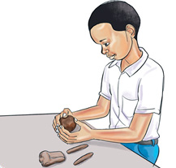
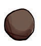
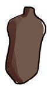
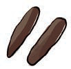
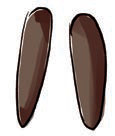
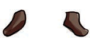
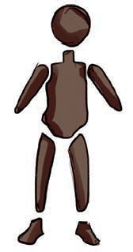
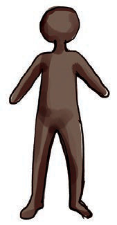

Modelling various shapes
Modelling the human figure

A boy molds a piece of clay at a table, with more clay and simple modeling tools beside him.Steps
-
1. Head

-
2. Chest

-
3. Arms

-
4. Legs

-
5. Feet

-
6. Join the parts together

-
7. The human figure is ready
